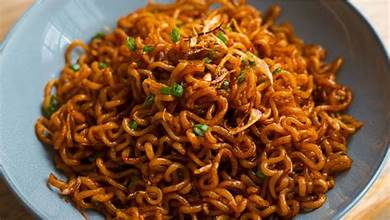

Nigerian Indomie Noodles With A Twist

Description
Indomie noodles are a favourite quick meal in Nigeria especially among students. The beauty of this dish lies in its versality. You can add vegetables, eggs and even meat to elevate it into a complete meal.
Ingredients
- Indomie noodles
- Carrots, bell peppers and green beans
- Eggs
- Seasoning from the noodles pack
Steps
- Cook the noodles according to the instructions.
- While the noodles are boiling, fry some eggs and set aside.
- In the same pan, saute the vegetables and mix in the cooked noodles.
- Stir everything together, adding the seasoning from the noodle pack.